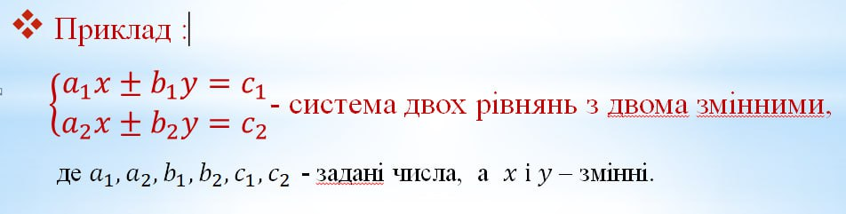

Системи лінійних рівнянь з двома змінними (довідковий матеріал для учнів 8 класу)
* Система рівнянь.
Системою рівнянь називають два або декілька рівнянь, для яких потрібно знайти спільні розв'язки. Для запису системи рівняння об'єднують фігурною дужкою. 
Розв’язати систему рівнянь – означає знайти всі її розв’язки або встановити, що їх немає.
* Графічний метод (алгоритм).
Виразити y через x в кожному рівнянні. Осі такі графіки можуть вийти
Побудувати в одній системі координат графік кожного рівняння
Визначити координати точки перетину графіків.
Записати відповідь у вигляді: (х;у).
Розв’язання системи графічним методом
Перевірка знань.Розв’язання системи графічним методом
Розв’яжіть графічно системи рівнянь
Метод підстановки (алгоритм)
1.Виразити з будь-якого рівняння системи одну змінну через другу.
2.Підставити в інше рівняння системи замість цієї змінної вираз, отриманий на першому кроці.
3.Розв'язати рівняння з однією змінною, отримане на другому кроці.
4.Підставити знайдене значення змінної у вираз, отриманий на першому кроці.
5.Обчислити значення другої змінної.
Розв’язання системи методом підстановки
.jpg)
Перевірка знань. Розв’язання системи методом підстановки
Метод додавання (алгоритм)
1.Дібравши «вигідні» множники, перетворити одне чи обидва рівняння системи так ,
щоб коефіцієнти при одній зі змінних стали протилежними числами.
2. Додати почленно ліві й праві частини рівнянь, отриманих на першому кроці.
3.Розв'язати рівняння з однією змінною, отримане на другому кроці.
4.Підставити знайдене на третьому кроці значення змінної в будь-яке
з рівнянь вихідної системи.
5.Обчислити значення другої змінної.
Розв’язання системи методом додавання
Перевірка знань. Розв’язання системи методом додавання
Контрольна робота для перевірки
Контрольні питання для самоперевірки з теорії
Використана література.